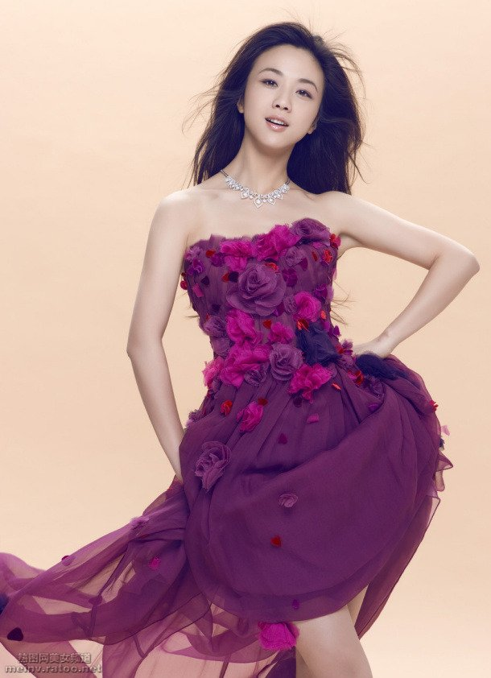

无效果：
-webkit-filter:none
灰度：
-webkit-filter:grayscale(0.7)
褐色：
-webkit-filter:sepia(0.6)
饱和度：
-webkit-filter:saturate(7.8)
色相旋转：
-webkit-filter:hue-rotate(250deg)
反色：
-webkit-filter:invert(.9)
透明度：
-webkit-filter:opacity(.6)
亮度：
-webkit-filter:brightness(.6)
对比度：
-webkit-filter:contrast(2.5)
模糊度：
-webkit-filter:blur(3px)
阴影：
-webkit-filter:
drop-shadow(10px 10px 3px #000)